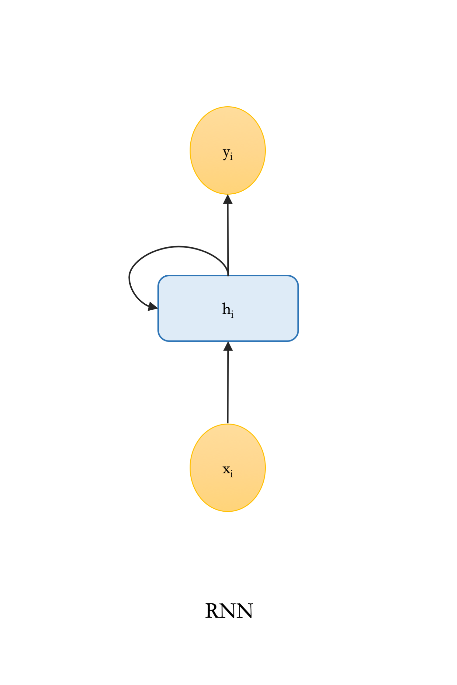
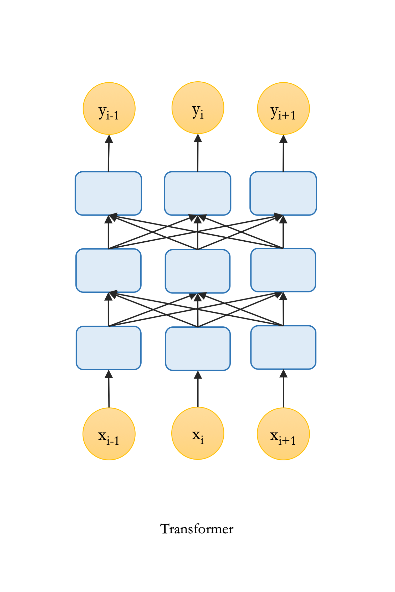
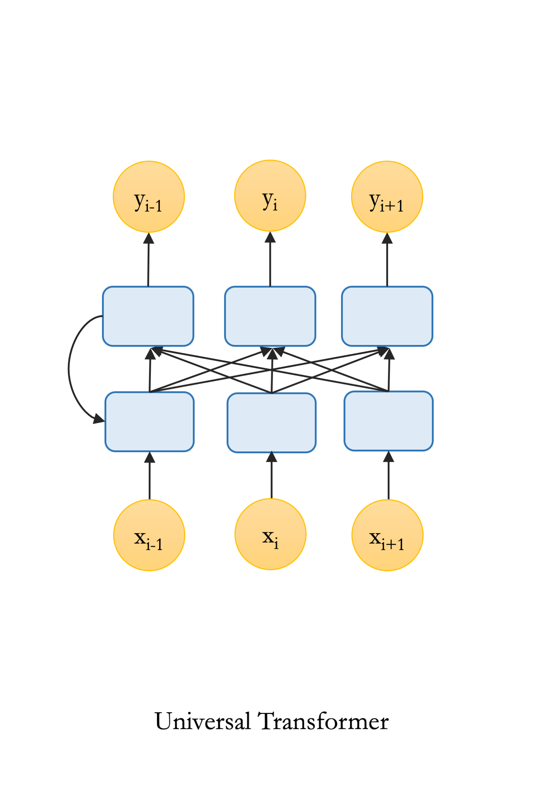

LSTMs (Hochreiter & Schmidhuber, 1997) and Transformers (Vaswani et al., 2017) are the basic building blocks of many state-of-the-art models for sequence modeling and natural language processing. While Transformers do extremely well on many tasks where the training data is adequate in quantity (Devlin et al., 2019; Keskar et al., 2019; Radford et al., 2019), several studies have shown that LSTMs can perform better than Transformers on tasks requiring sensitivity to (linguistic) structure, specially when the data is limited (Tran et al., 2018; Dehghani et al., 2019). This is mainly due to the recurrent inductive biases of LSTMs that helps them better model the hierarchical structure of the inputs.
While theoretically, both recurrent neural networks (RNNs) and Transformers can deal with finite hierarchical structures, empirical results indicate superiority of RNNs over Transformers (Tran et al., 2018; Dehghani et al., 2019; Hahn, 2020).
The superior performance of LSTMs over Transformers in these cases is attributed to their recurrent inductive bias. The recurrent inductive bias of LSTMs enables them to model hierarchical structure of the inputs, which is of crucial importance in the subject-verb agreement task (Tran et al., 2018).
What is recurrent inductive bias?
The inductive bias of RNNs is often referred to as the recurrent inductive bias. Here, we distinguish between three main sources of this bias:
- The sequential processing of the input: There is an inherent notion of order in the architecture that forces the model to access next tokens in the input one by one;
- No direct access to the past tokens: The model has to compress all the information from past tokens in a hidden state, which is accessible when processing a new token;
- Recursion: The model recursively applies the same function on the varying input at every time step.
Transformers, in contrast, process the input in parallel. Although a weak notion of order is encoded by positional embeddings, no explicit assumption is made in the connectivity structure of the architecture. Moreover, they have a global receptive field and can access all tokens through self-attention. Finally, standard Transformers are not recursive.
We can empirically examine the benefits of each of these biases. To do so, we will modify the standard Transformer to have an architecture with specifications that are similar to RNNs and we measure how the performance of the models change as we include more aspects of the recurrent inductive bias.
 

We employ a standard two-layer unidirectional LSTM and three different variants of Transformers: (1) transformer: a standard six-layer Transformer encoder with a class token (CLS) for classification (BERT style), (2) sequential transformer: a standard six-layer Transformer encoder with future masking where the classification is done using the representation of the last token\footnote{Note that future tokens are masked out by default when using transformer in the decoder mode, e.g., in a language modeling setup.}, (3) sequential universal transformer: a six-layer Universal Transformer (missing reference) as a proxy for assessing the ability of models to capture hierarchical structure in natural language. In this task, examples are grouped into different levels of difficulty based on the number of “agreement attractors”1, and “distance” between the verb and its subject.
We train these models to predict the number of the masked verb in a given sentence. As we can see in the plot blow, LSTM achieves the best performance. Interestingly, comparing all four models, we find that the performance steadily increases as more aspects of the recurrent inductive bias are included.

As another indicator of the quality of the solutions that different models converged to in the classification setup, we look into their confidence calibration2.
In figure below, we plot the Expected Calibration Error (ECE) of the models. In line with the trends in the performances of these models, the expected calibration error decreases as we move from standard Transformer toward LSTM.
Additionally, as shown in both above figures, we find a decreasing trend in the variance of the models, i.e., adding more inductive biases to the models decreases their variance. This is empirical evidence that supports the relation between variance of the solutions a model converges to and its inductive biases.
-
Agreement attractors are intervening nouns with a different number than the number of the subject. E.g., given the input The keys to the cabinet {is?/are?}.’’, the word cabinet is an agreement attractor. ↩
-
Confidence calibration captures how well likelihood (confidence) of the prediction of the model predicts its accuracy. For a well-calibrated model, if we bin the confidence scores and compute the accuracy for each bin, the accuracies are perfectly correlated with the confidence values. The Expected Calibration Error (ECE) is computed as the distance between the calibration curve of the model and the perfect calibration curve. ↩